Gallery
 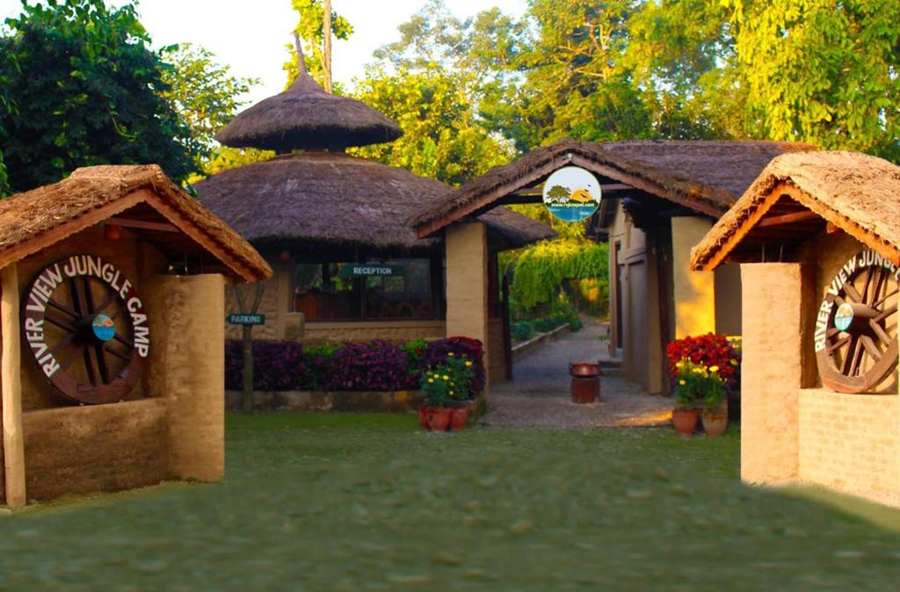
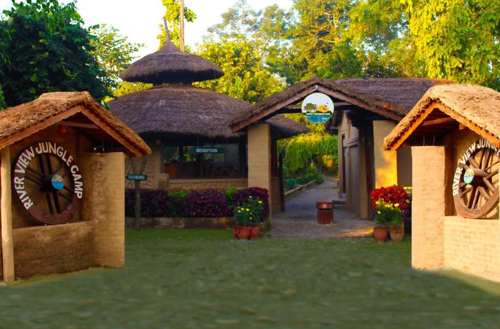
 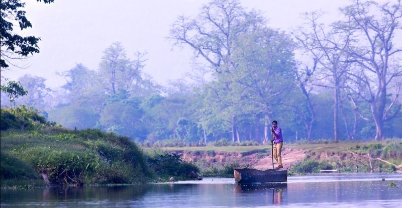
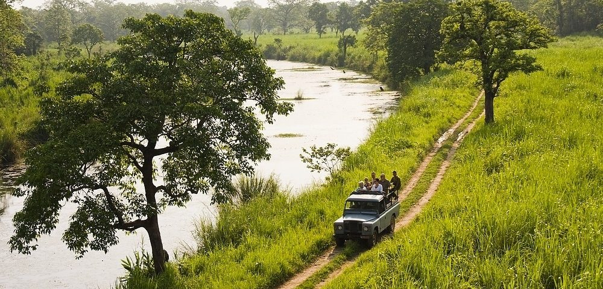
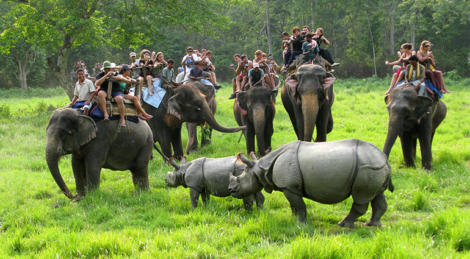
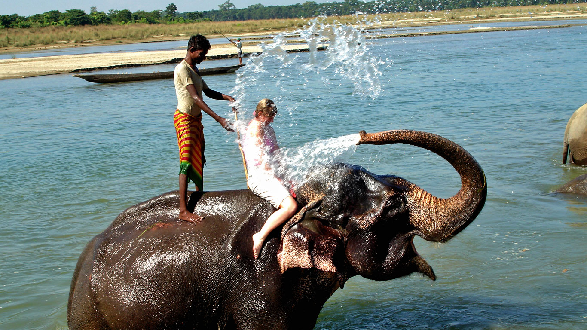
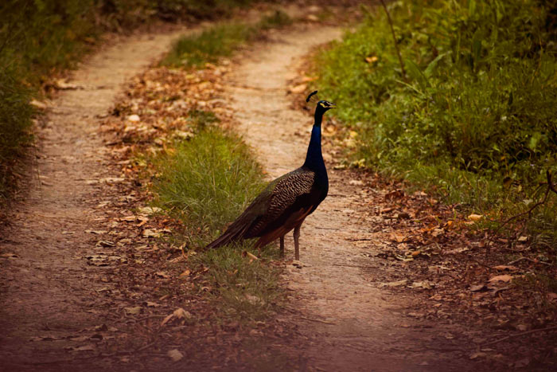
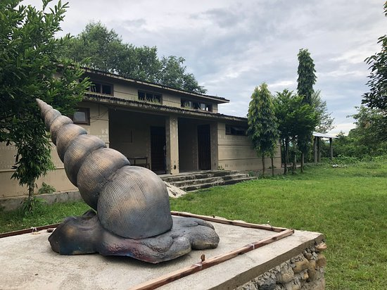
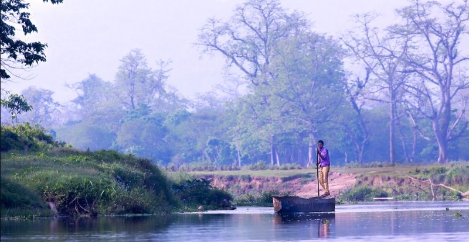
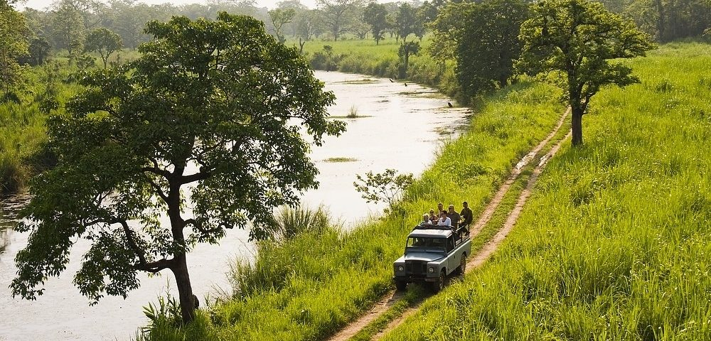
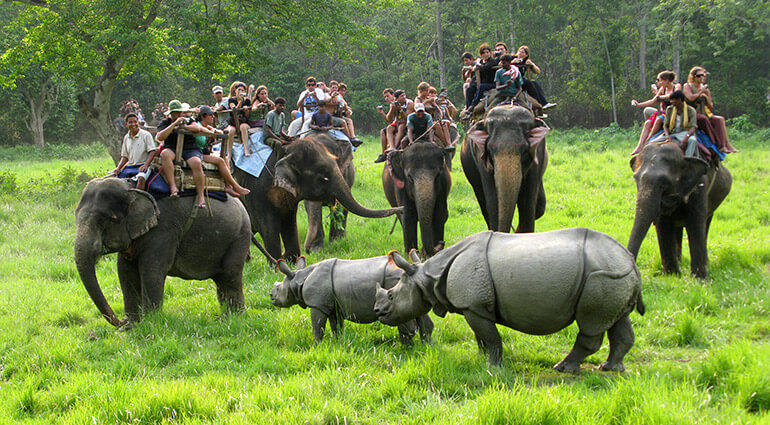
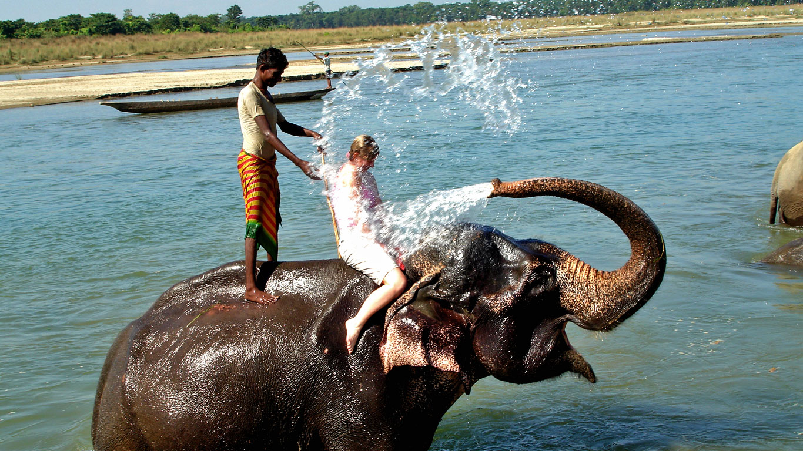
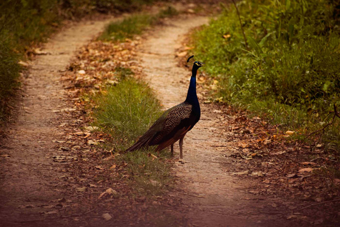
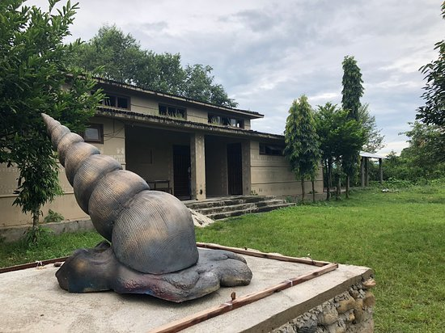
After Kathmandu and Pokhara, Sauraha is the most important tourist destination in Nepal. Sauraha is located at Bacchyauli village in the eastern part of Chitwan district and is famous for observation of various wild animals and birds. The Chitwan National Park, rich in natural beauty and bio diversity has become one of the most popular destination for tourist. Sauraha offers a multitude of activities suited for the entertainment of the tourist. It is possible to observe different wild animals and birds in the natural forest of the Chitwan National Park by riding an elephant or vehicle. The adventurous jungle walk, elephant ride, jeep safari, canoe ride, tonka ride, Tharu cultural program, elephant bath, observation of wild life trophy exhibition, views of sunrise and sunset are the major tourist activities available in Sauraha. Sauraha is a village in Chitwan District of Nepal situated close by the Rapti River and the Chitwan National Park. It is the eastern gateway to Chitwan National Park . Beginning literally as small and very quaint Tharu village of mud and daub huts and houses, with a half dozen mud and daub hotels, it has grown into a small quiet town full of western style hotels and resorts, restaurants, Internet cafes, and gift shops. Jungle / wildlife safaris by foot, jeep and elephant. You are for sure to see the rhinoceros.
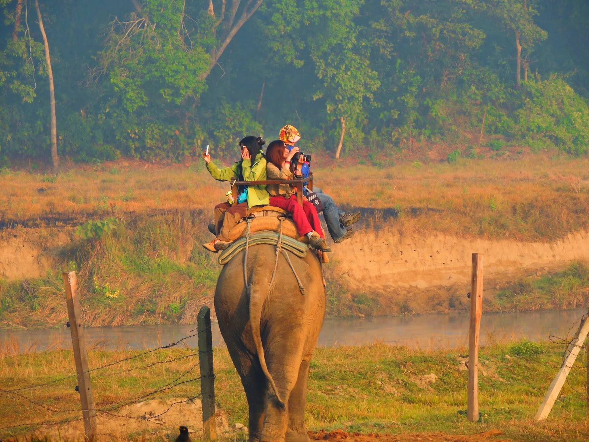
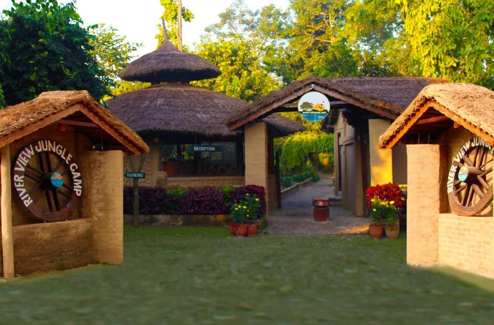
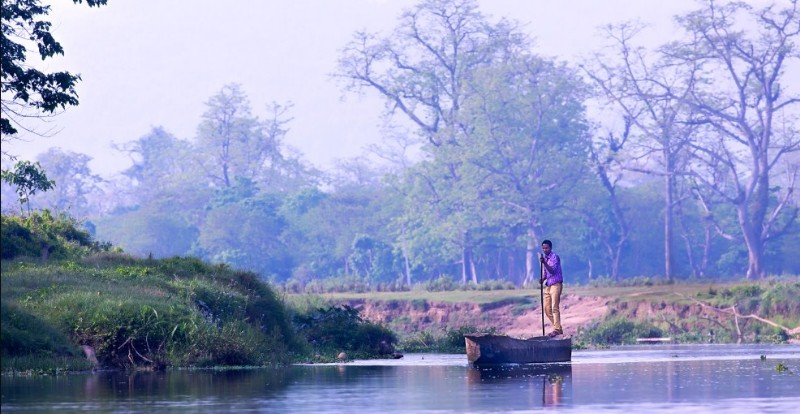
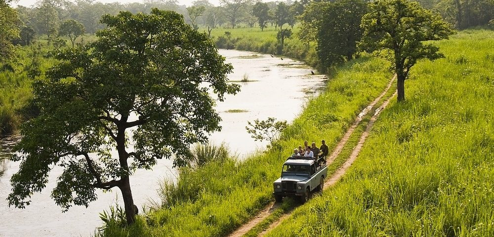
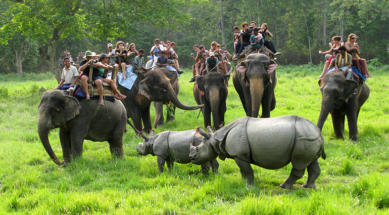
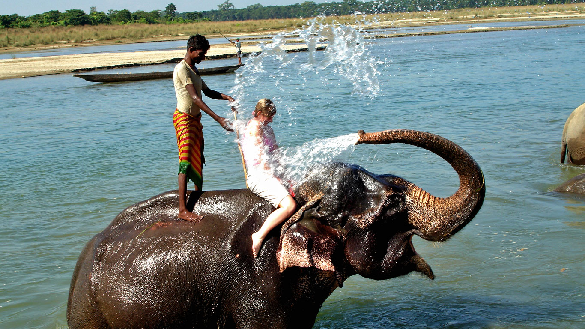
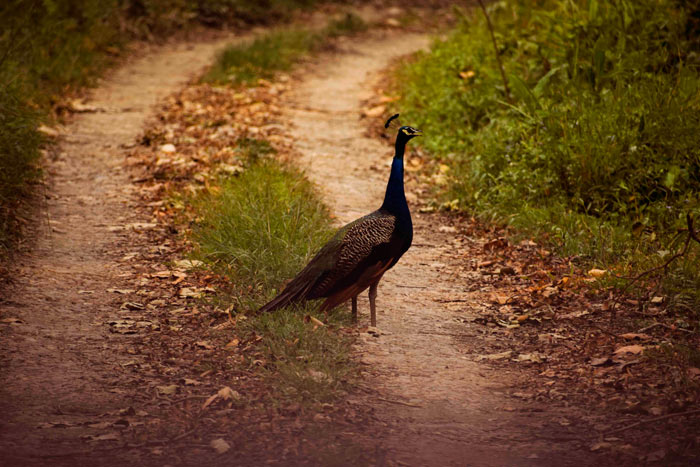
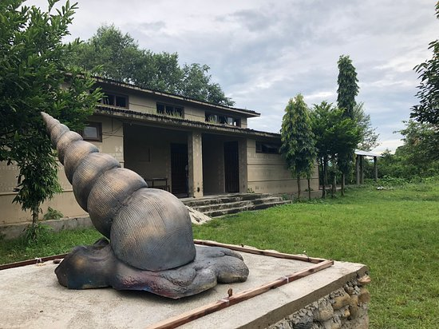